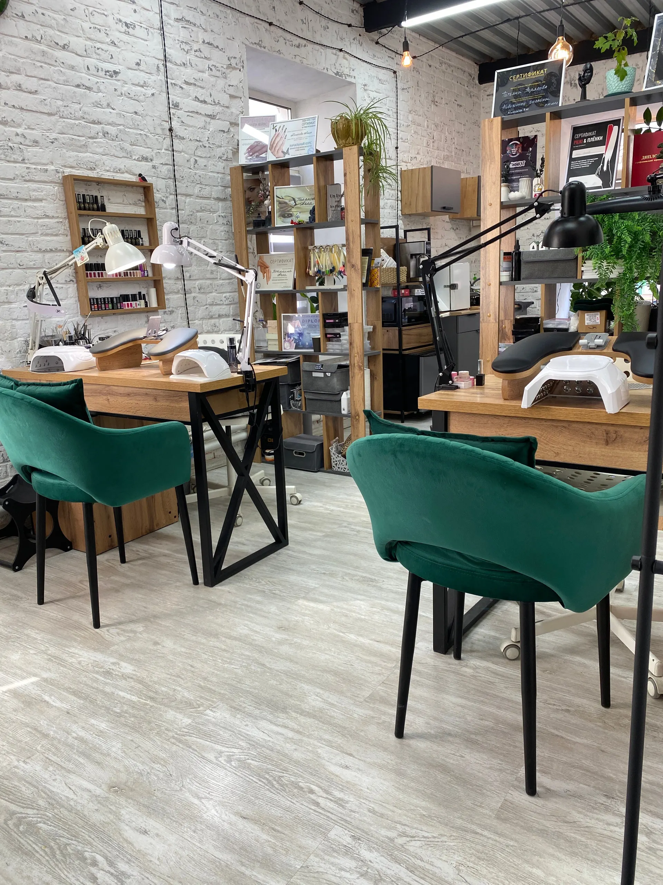
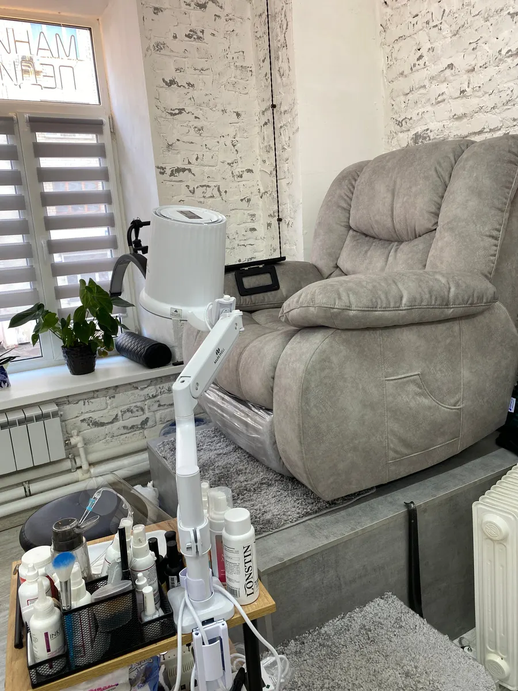
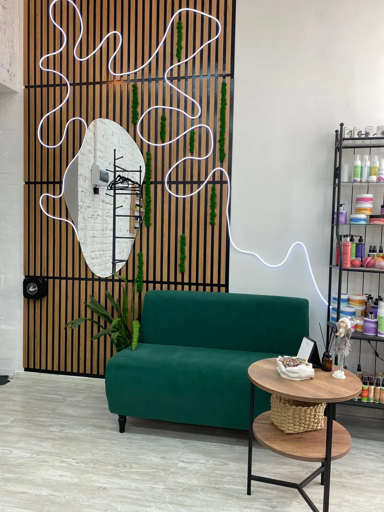
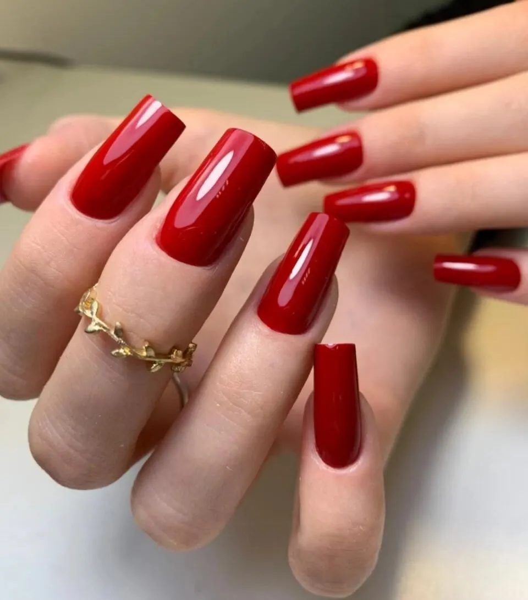

Студия маникюра и педикюра · Калуга, улица Дзержинского, 81
Маникюр и педикюр в Калуге - цена до записи
Прайс по услугам, время процедуры названо. Мастера Алла и Татьяна, запись по телефону или онлайн на Картах.
- Цена названа до записи
- Рейтинг 4,7 по 22 оценкам на Яндекс Картах
- Ежедневно 10:00-20:00

Цена названа до записи
Цены из онлайн-записи студии на Яндекс Картах. Итоговую сумму подтвердим при записи.
Маникюр и наращивание
- Маникюр аппаратный1 ч1 000 ₽
- Маникюр пилочный1 ч 20 мин1 300 ₽
- Маникюр с покрытием гель-лак2 ч2 000 ₽
- Укрепление ногтей гелем2 200 ₽
- Наращивание ногтейот 2 500 ₽
- Ремонт ногтя300 ₽
Педикюр
- Педикюр пальчики с покрытием гель-лак2 000 ₽
- Педикюр аппаратный, пальчики без покрытия1 500 ₽
- Педикюр аппаратный полный без покрытия2 000 ₽
- Педикюр аппаратный полный с покрытием гель-лак2 500 ₽
Цены из онлайн-записи студии на Яндекс Картах (снято 21.10.2026), на карточке отмечено «давно не обновлялось».
Как записаться
- 01
Выбираете услугу, день и время
В форме ниже на странице. Цена видна сразу.
- 02
Звоните в студию
Текст для разговора уже набран: останется назвать его мастеру. Номер: +7 (920) 872-03-35.
- 03
Студия подтверждает запись
Согласуете время. Можно записаться и онлайн на Яндекс Картах.



Почему в студии АТ
Рейтинг 4,7 по 22 оценкам
На Яндекс Картах 19 отзывов. Клиентки пишут, что ходят к мастеру годами: «много лет», «около 2 лет».
Мастера Алла и Татьяна
Клиентки называют их по имени и записываются именно к ним. Выбираете мастера при записи.
Работа носится долго
В отзывах: «ногти носятся долго», «палитра лаков нескончаемая». Работы мастеров видны на фото выше.
Чисто, спокойно, с кофе
В отзывах: «стильно, чисто, всегда предложат кофе и найдут нужное время». Оплата картой, по СБП, переводом или наличными.
Отзывы с Яндекс.Карт
«Классное место, прекрасные мастера и отличное настроение после посещения!!! К мастеру Алле хожу много лет(почти 10 !!!), всегда приветлива, большой профессионал своего дела!»
Татьяна Ткаченко · 30 апреля 2026
«Отличная студия! Стильно, чисто, всегда предложат кофе и найдут нужное время. Работа всегда очень качественная и аккуратная, ногти носятся долго. Спасибо за качество и сервис!»
Olga P. · 9 апреля 2026
«Очень уютное место. Мастера профессионалы своего дела, стараются учесть все пожелания клиента, огромная палитра цветов и количество техник, которыми обладают мастера.»
Лилия Т. · 8 апреля 2026
Отзывы с карточки на Яндекс.Картах, без правок.
Частые вопросы
Сколько стоит маникюр?
Аппаратный - 1 000 ₽, пилочный - 1 300 ₽, с покрытием гель-лак - 2 000 ₽. Укрепление гелем - 2 200 ₽, наращивание - от 2 500 ₽.
Сколько стоит педикюр?
Пальчики с покрытием гель-лак - 2 000 ₽, полный аппаратный без покрытия - 2 000 ₽, полный аппаратный с гель-лаком - 2 500 ₽.
Как записаться?
Выберите услугу, день и время в форме и позвоните: +7 (920) 872-03-35. Можно записаться и онлайн на Яндекс Картах.
Как оплатить?
Картой, по СБП, банковским переводом или наличными.
Есть ли мужской и детский маникюр, подарочный сертификат?
На карточке студии отмечены мужской ногтевой сервис и подарочный сертификат. Условия уточните по телефону.
Где находится студия?
Калуга, улица Дзержинского, 81, офис 3 (жёлтое здание). Работаем ежедневно с 10:00 до 20:00.
Выберите услугу и время
- Адрес
- улица Дзержинского, 81, офис 3, Калуга
- Часы
- ежедневно 10:00-20:00
- Телефон
- +7 (920) 872-03-35